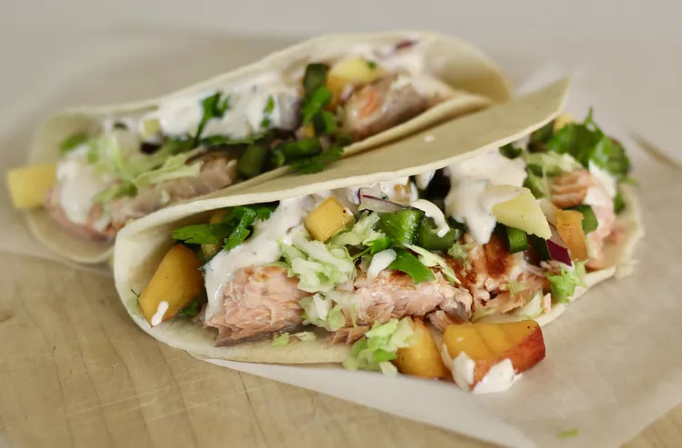

Salmon Tacos
Home

Mouth-watering salmon tacos enough to tempt even the most devote citizens
Absolutely tasty grilled salmon wrapped up in a small but simple tortilla,
topped with a flavorful peach-mango salsa, shredded cabbage, avocado, and
a (secret) special sauce.
Ingredients
Mango Salsa
- 3 mangoes, diced
- 2 peaches, diced
- 3 poblano peppers, seeded and diced
- 1/2 red onion, diced, or more to taste
- 1/2 lime, juiced, or more to taste
- 1 bunch cilantro, chopped, divided
Special Sauce
- 1 (8 ounce) container sour cream
- 3 tablespoons mayonnaise
- 1 tablespoon ketchup
- 1/8 teaspoon ground cayenne pepper
- salt and ground black pepper
- 24 (6 inch) corn tortillas
- cooking spray
- 2 pounds fresh salmon
- 1 small head cabbage, shredded
- 3 avocados, sliced
- 2 limes, cut into wedges
Steps
-
Combine mangoes, peaches, poblano peppers, red onion, juice of 1/2 a
lime, and 1/2 the cilantro in a large bowl to make mango salsa. Cover
with plastic wrap and refrigerate (at least 1 hour, preferably
overnight)
-
Mix sour cream, mayonnaise, ketchup, cayenne pepper, salt, and black
pepper in a bowl bowl to make special sauce
- Preheat grill pan over medium-high heat; coat with cooking spray
-
Cook salmon until easily flaked with a fork (~ 4 minutes per side)
-
Transfer salmon to a plate and flake into smaller pieces with a fork
-
Heat tortillas in the preheated oven until warmed through (~ 5 minutes)
- Divide salmon among tortillas
-
Top with mango salsa, special sauce, shredded cabbage, avocados, and
remaining cilantro
- Wrap up tacos and serve lime wedges alongside